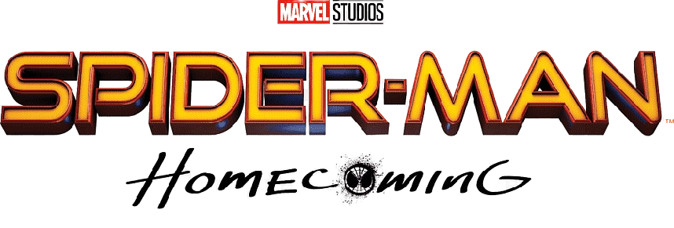
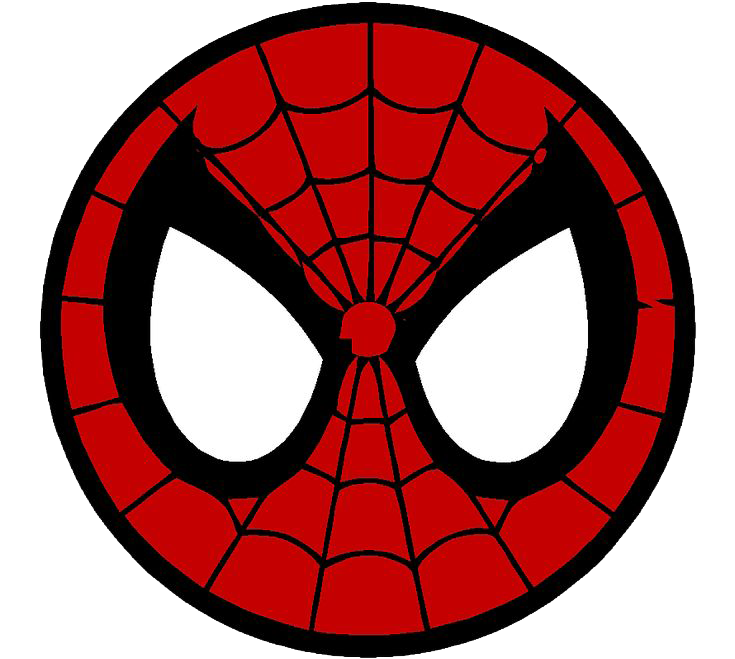

Peter intenta equilibrar su vida de estudiante en Queens con sus patrullajes como el amigable vecino de Nueva York, siempre bajo la atenta mirada de Tony Stark. Sin embargo, su rutina se complica cuando se cruza con El Buitre, un villano que lidera un negocio clandestino con tecnología alienígena robada.
